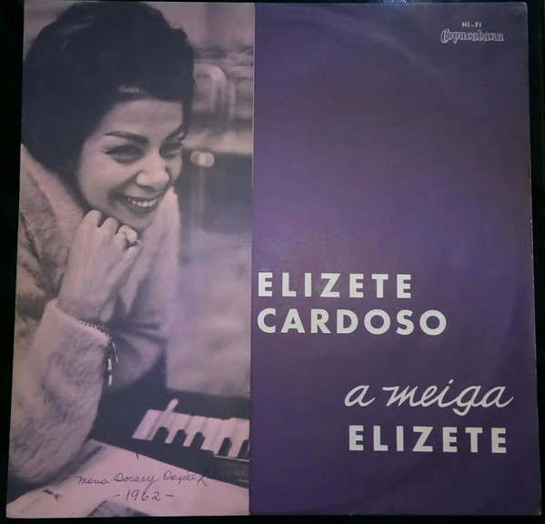

Obras e Histórias da Divina
Elizeth Sobe o Morro

Gravadora: Copacabana/EMI
Produtor: Moacyr Silva
Formato: LP (1965) / CD (2008)
Data de Lancamento: 1965
Canção do Amor Demais

Gravadora: Copacabana/EMI
Produtor: Moacyr Silva
formato: LP (1965) / CD (2008)
Data de Lancamento: 1965
A Meiga Elizeth nº5

Gravadora: Copacabana
Produtor:Própria gravadora
Formato: LP (1963)
Data de Lancamento: 1965
Magnífica
Gravadora: Copacabana
Produtor: Própria gravadora
Formato: LP (1959)
Data de Lancamento: 1959
Live in Japan
Gravadora: Copacabana
Produtor: Própria gravadora
formato: LP (1977)
Data de Lancamento: 1977
A Mulata Maior
Gravadora: Copacabana
Produtor:Oséas Lopes e Adelzon Alves
Formato: LP (1974)
Data de Lancamento: 1974
Elizethíssima
Gravadora:Som Livre
Produtor:Max Pierre e Hermínio Bello de Carvalho
Formato: LP (1981) / CD (1994)
Data de Lancamento: 1981
Disco de Ouro
Gravadora: Copacabana
Produtor:Própria Gravadora
formato: LP (1974) / CD (1998)
Data de Lancamento: 1974
A Enluarada Elizeth
Gravadora: Copacabana
Produtor:Hermínio Bello de Carvalho
Formato: LP (1967) / CD (2006)
Data de Lancamento: 1967
Outra Vez Elizeth
Gravadora:Som Livre
Produtor:Max Pierre e Sérgio Carvalho
Formato: LP (1982) / CD (1991)
Data de Lancamento: 1982
Feito em Casa
Gravadora: Copacabana
Produtor: Moacyr Silva
formato: LP (1974)
Data de Lancamento: 1974
Elizeth A exclusiva
Gravadora: Copacabana
Produtor:Própria gravadora
Formato: LP (1970)
Data de Lancamento: 1970